CortenMM: Efficient Memory Management with Strong Correctness Guarantees
This page was written by an AI model to give a high-level overview of the paper. Please check the paper for detail: ACM Digital Library.
The memory management subsystem (MM) of an OS programs the MMU (page tables and TLBs) and tracks every process's virtual memory. It has two long-standing problems: poor multicore scalability, and subtle concurrency bugs with real security consequences. The paper traces both to the same root design decision, used by essentially every OS since SunOS in 1986: a software-level abstraction (a tree of virtual memory areas, VMAs, as in Linux's maple tree) layered on top of a hardware-level abstraction (the page table). Keeping these two drastically different, complex data structures consistent under concurrent access is hard, and doing it efficiently is harder still.
Academic systems such as RadixVM, NrOS, and Bonsai improve the data structures or concurrency control inside this two-level design, but remain bounded by the need to synchronize both layers. Linux's own 2023 rewrite to fine-grained per-VMA locks is a cautionary case: it needs four different lock types (a whole-address-space lock, per-VMA locks, and two kinds of page-table locks) whose combination rules for real operations like mmap, munmap, and page faults are, in the authors' words, "only documented in the code." In the two years since, this code has produced ten CVEs from concurrency bugs, nine of them crash-inducing and five leading to information leaks or privilege escalation.
CortenMM's key insight is that the two original reasons for the software-level abstraction no longer apply. First, mainstream ISAs (x86, ARM, RISC-V) have converged on the same hardware shape, a multi-level radix-tree page table, so hiding the remaining minor differences no longer needs a separate abstraction, just language features (Rust traits here, C macros in Linux). Second, the extra bookkeeping that advanced semantics like on-demand paging and copy-on-write require does not have to live in a decoupled structure; it can be attached directly to the page table. So CortenMM eliminates the software-level abstraction entirely.
Concretely, every page-table page gets a descriptor with a lock and an on-demand per-PTE metadata array recording each virtual page's state. The MMU is programmed only through a transactional interface: locking a virtual address range returns a cursor on which any sequence of four basic operations (query, map, mark, unmap) executes atomically. Two locking protocols implement this directly on the page table's own hierarchy: a simple readers-writer-lock version (CortenMMrw) and a scalable, RCU-based lock-free-traversal version (CortenMMadv). Because the design is this simple, the authors formally verify, in Verus, that both protocols guarantee mutual exclusion and that the four basic operations are functionally correct and always leave the page table well-formed, while the rest of the OS is confined to safe Rust so it cannot bypass the verified interface.
On a 384-core AMD EPYC 9965 machine, running the authors' from-scratch OS (Asterinas) against Linux 6.13.8, RadixVM, and NrOS, CortenMM improves real-world application throughput by 1.2x to 26x, scales close to linearly on low-contention microbenchmarks where Linux collapses, and matches Linux's memory overhead and single-threaded performance in most cases, all for about 8 person-months of proof effort at a 5.2:1 proof-to-code ratio.
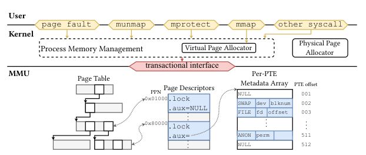
Key takeaways
- Linux-style memory management uses two levels of abstraction: a software VMA tree and the hardware page table. Keeping both consistent under concurrency is the root cause of both scalability bottlenecks and concurrency bugs.
- CortenMM deletes the software-level abstraction, since its two original justifications (hardware diversity, semantics bookkeeping) no longer hold for modern, radix-tree-based ISAs.
- The MMU is programmed only through a transactional interface (lock a range, then query/map/mark/unmap atomically), implemented by two locking protocols: a readers-writer-lock version and a lock-free, RCU-based version.
- The design's simplicity enables formal verification (in Verus) of mutual exclusion for both locking protocols and functional correctness of the page-table operations; the rest of the kernel is restricted to safe Rust.
- On 384 cores, CortenMM beats Linux by 1.2x to 26x on real applications and by up to three orders of magnitude on low-contention microbenchmarks, with memory overhead and portability costs comparable to or lower than Linux's.
From two abstractions to one transactional interface
Why MM has two levels, what synchronizing them costs, CortenMM's single-level design, its two locking protocols, and the implementation.
1 · Why memory management has two levels of abstraction
SunOS introduced the VMA abstraction in 1986 for two reasons. First, some semantics applications rely on, such as on-demand paging, require state that the MMU itself cannot hold: a VMA can describe a region before any page table entries for it exist. Second, decoupling memory management code from the hardware MMU format made it portable across very different MMUs of that era: segments, inverted page tables, hashed page tables, and software-managed TLBs. This design became the default; Linux, BSD, Windows, Fuchsia, and academic systems like K42, Barrelfish, NrOS, Bonsai, and RadixVM all keep a VMA-like tree alongside the page table.
2 · What synchronizing two levels costs today
Linux's current scheme uses four lock types: a whole-address-space mmap_lock, per-VMA readers-writer locks, a coarse lock for upper page-table levels, and fine-grained locks for lower levels.
| Operation type | Locks required |
|---|---|
| Read VMA fields | Reader side of mmap_lock or the VMA lock |
| Write VMA fields | Writer side of mmap_lock and the VMA lock |
| Access page table | Locks for writes; no locking for reads |
| Page table traversal | Locks to read VMA fields |
| Insert a page table entry | Locks to read VMA fields, plus the lock of the target page table |
| Clear a page table entry | Locks to read VMA fields, plus the lock of the parent page table |
| Free a page table | Locks to write VMA fields, only after the entry has been cleared |
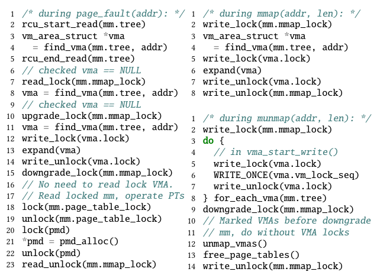
Individually, the rules for VMAs or for page tables are simple. The complexity appears in complete operations, such as mmap, munmap, and page faults, which touch both levels in combinations that the paper says are "only documented in the code," not in any single table. Linux introduced this fine-grained scheme in April 2023; in the following two years it produced ten CVEs from concurrency bugs, nine crash-inducing and five leading to severe vulnerabilities such as information leaks and privilege escalation.
3 · The insight: the two levels are no longer needed
Both of SunOS's original justifications have eroded. Mainstream ISAs (x86, ARM, RISC-V) now uniformly use multi-level radix-tree page tables, so current kernels already hide their minor differences with language features (C macros) rather than a software abstraction. And while advanced semantics still need extra bookkeeping outside the raw page table bits, nothing requires that bookkeeping to live in a separate, differently-shaped data structure.
4 · The single-level data structure
CortenMM attaches a page descriptor to every page-table (PT) page, indexed by its physical page number. Each descriptor holds a lock protecting the PT page, plus a per-PTE metadata array, allocated on demand and freed with the PT page, indexed by PTE offset. Each array entry stores the minimal state needed for advanced semantics: whether the virtual page is invalid, virtually allocated but unmapped, mapped to a physical page, or swapped, plus extra fields (permissions; for a swapped page, the disk ID and location). This single data structure replaces the VMA tree entirely.
| Feature | Linux | RadixVM | NrOS | CortenMM |
|---|---|---|---|---|
| On-demand paging | yes | yes | no | yes |
| Copy-on-write | yes | yes | no | yes |
| Page swapping | yes | no | no | yes |
| Reverse mapping | yes | no | no | yes |
| mmaped file | yes | yes | no | yes |
| Huge page | yes | no | yes | yes |
| NUMA policy | yes | yes | yes | no (not yet implemented) |
5 · The transactional interface
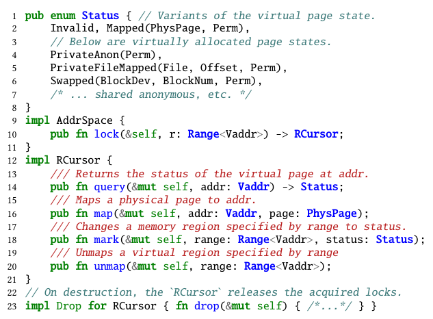
The MMU is programmed only through this interface. AddrSpace::lock(range) returns an RCursor on which the caller issues any combination of four basic operations within the range: query (read a virtual page's status), map (map a physical page), mark (set a range's status, e.g. to swapped or to a given permission), and unmap. All operations issued through one cursor are applied atomically; the locks acquired at lock() are released automatically when the cursor is dropped. CortenMM only materializes page table entries on demand, using upper-level PT pages to represent large regions that share the same status.
This gives two concurrency guarantees: operations within one transaction are serialized against any other transaction that touches an overlapping region, and transactions on disjoint regions proceed fully in parallel, since there is no software-level structure left to contend on.
6 · CortenMMrw: a readers-writer locking protocol
- Starting from the page table root, walk downward. At each level, check whether a child PT page would fully cover the requested range.
- If so, acquire a reader lock on the current PT page and descend into that child.
- Stop at the lowest PT page that still fully covers the range, the "covering PT page." Release its reader lock and acquire its writer lock instead; locking it implicitly locks every descendant.
- On drop, release all acquired locks in reverse order.
This simple protocol already outperforms Linux by up to 15x on real-world benchmarks (see the Evaluation tab), because serialization only happens between transactions whose covering PT pages are ancestors or descendants of each other.
7 · CortenMMadv: lock-free traversal with RCU-safe unmap
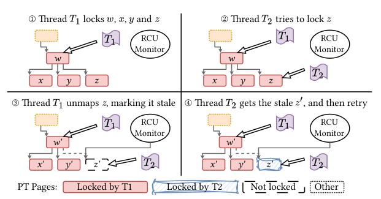
CortenMMadv removes locking from the traversal phase entirely, using RCU (read-copy update) instead, which scales better under contention:
- Traversal phase (lock-free). Inside an RCU read-side critical section, walk from the root to the covering PT page using only atomic reads, without acquiring any lock.
- Locking phase. Lock the covering PT page, then do a preorder depth-first search locking every descendant PT page. This is necessary precisely because the traversal was lockless: another thread could otherwise reach the same PT page by a different path.
- The race with unmap. A thread unmapping (and freeing) a PT page first atomically clears its entry in the parent, so concurrent readers see either the old page or a cleared entry, never a half-updated one. It then marks the removed subtree's PT pages "stale" and places them in a global RCU monitor, which frees them only once no reader can still be in a critical section that might access them.
- Recovering from staleness. A thread that locks a PT page and finds it marked stale knows it raced with a concurrent unmap and lost; it unlocks, ends its RCU critical section, and retries the traversal from the root.
Both protocols resemble two-phase locking: all needed locks are acquired before any page-table mutation, and released only afterward, which gives atomicity without deadlock (CortenMMrw always walks root to leaf, so no cycle can form). The paper formally proves mutual exclusion for both; see the Evaluation tab for how this affects scalability.
8 · Handling mmap, munmap, page faults, and advanced semantics
With the transactional interface, system calls become short sequences of basic operations. mmap locks the target range, queries it for sanity checks, then marks it with the requested status and permissions. munmap locks the range and calls unmap. The page fault handler locks the faulting range, queries the current status, and branches: a virtually-allocated-but-unmapped page gets a freshly zeroed physical page mapped in; a write fault on a copy-on-write mapped page either flips a permission bit (if no other process still shares the physical page) or allocates and maps a private copy. All of this executes as one atomic transaction.
Advanced semantics live entirely in the per-PTE metadata array. On-demand paging stores permissions for virtually-allocated pages before any page table entry exists. Copy-on-write adds two bits per entry, a shared bit and a writable bit; fork sets the shared bit and write-protects the page for both parent and child, and a later write fault checks both bits to decide whether to copy.
9 · Portability across ISAs
CortenMM assumes only that the page table is a multi-level radix tree whose software-controlled PTE bits can encode validity, leaf-ness, permissions, and access/dirty information, true of x86, ARM, and RISC-V. Rust traits abstract over the per-ISA bit layout (for example, what makes a PTE "present" differs between x86 and RISC-V), so the rest of CortenMM's code is ISA-agnostic. Section 6.7 (Evaluation tab) reports this costs less code than Linux's equivalent porting.
10 · Implementation
CortenMM is 8,028 lines of safe Rust plus 122 lines of unsafe Rust, with the transactional interface itself only 829 lines (225 for CortenMMadv's locking, 153 for CortenMMrw's). It supports 4 KB, 2 MB, and 1 GB pages via conventional huge pages. Other optimizations borrowed or adapted from prior work: a per-core virtual address allocator to avoid allocation contention, parallelized TLB flushes with early acknowledgement, and lazy TLB shootdown on munmap (LATR). The physical page and kernel heap allocators mirror Linux's buddy and slab allocators, and reverse mappings (for named and anonymous pages) are stored in the page descriptor, always accessed through the transactional interface. Results for all of this are in the Evaluation tab.
Evaluation
What the paper measures, its key figures as they appear in the paper, and what each one tells us.
All experiments run in a VM on a two-socket AMD EPYC 9965 machine, 384 cores and 1 TB DRAM total, with hyper-threading and turbo boost disabled. The VM is used because CortenMM, RadixVM, and NrOS all lack drivers to boot bare-metal on this hardware; the authors state this does not affect their performance claims.
| What | Value in the paper |
|---|---|
| Platform | 2-socket AMD EPYC 9965, 384 cores / 1 TB DRAM total, in a VM |
| Baselines | Linux 6.13.8 (mitigations like KPTI disabled), RadixVM, NrOS |
| Microbenchmarks | mmap, mmap-PF, unmap-virt, unmap, PF (Table 3), each operating on 16 KB regions per thread |
| Real-world workloads | PARSEC 3.0, metis and psearchy (MOSBENCH), JVM thread creation (OpenJDK 21.0.6) |
| Metrics | Throughput (ops/µs, jobs/min), latency (ms), memory overhead (%), lines of code |
Single-threaded, CortenMM wins on four of five memory operations
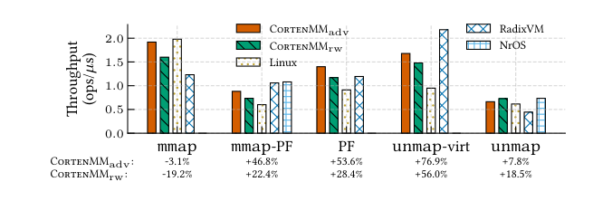
What it shows. Throughput (ops/µs) of mmap, mmap-PF, PF, unmap-virt, and unmap, single-threaded, for CortenMMadv, CortenMMrw, Linux, RadixVM, and NrOS (the latter two only where supported). CortenMMadv beats Linux by 7.8% to 46.8% on mmap-PF, PF, unmap-virt, and unmap. The exception is mmap, where CortenMMadv is 3.1% slower than Linux and CortenMMrw 19.2% slower.
What to take from it. Linux is slow at unmap-virt because it must split VMA tree nodes, costlier than simply removing page table entries; elsewhere Linux pays for time spent maintaining the VMA layer. CortenMM is slower at plain mmap because it allocates and initializes page table pages up front, more expensive than initializing one VMA struct; Linux defers that cost to the first page fault, which is why CortenMM instead wins at mmap-PF. NrOS lacks on-demand paging, so it is evaluated only on mmap-PF (as plain mmap) and unmap.
Under low contention, CortenMMadv scales where Linux collapses
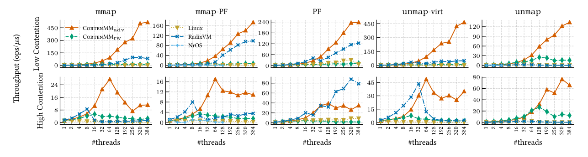
What it shows. Multithreaded throughput from 1 to 384 threads, for low-contention (private region per thread) and high-contention (shared region) variants of each microbenchmark. At 384 cores, low contention, CortenMMadv outperforms Linux by 33x (PF) to 2270x (unmap-virt); under high contention it does not scale past 64 threads (contention on the last shared PT page) but still beats Linux by 3x to 1489x at 384 cores. CortenMMrw is slower than CortenMMadv (readers-writer locks cost more than RCU reads) but still beats Linux by 1.8x to 275x at low contention and 5.9x to 275x at high contention, except on high-contention PF, where Linux is 1.8x faster than CortenMMrw.
What to take from it. Linux's scalability bottleneck is exactly the extra VMA-layer synchronization described in the How It Works tab: mmap and munmap take the coarse-grained writer-side mmap_lock outright, and even page faults, which use some fine-grained locking, still pay for VMA-level synchronization CortenMM has nothing equivalent to. RadixVM, which replicates the page table per core, scales well too and even beats CortenMMadv on high-contention PF, at a memory cost shown in Result 6. NrOS's coarse per-NUMA-replica locking keeps it close to Linux.
Applications that don't stress memory management see no regression
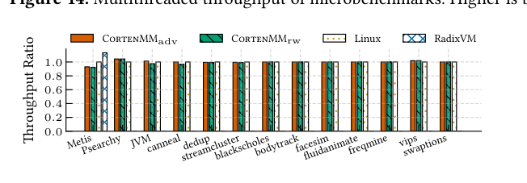
What it shows. Single-threaded throughput of PARSEC benchmarks, metis, psearchy, and JVM, normalized to Linux. Most PARSEC workloads other than dedup do not stress memory management, and CortenMM's ratio stays at or above 1.0 for them.
What to take from it. Eliminating the VMA abstraction does not cost anything for workloads that rarely call mmap/munmap or fault heavily; the gains in Results 1 and 2 are not paid for elsewhere.
JVM thread creation and metis scale far better under CortenMM
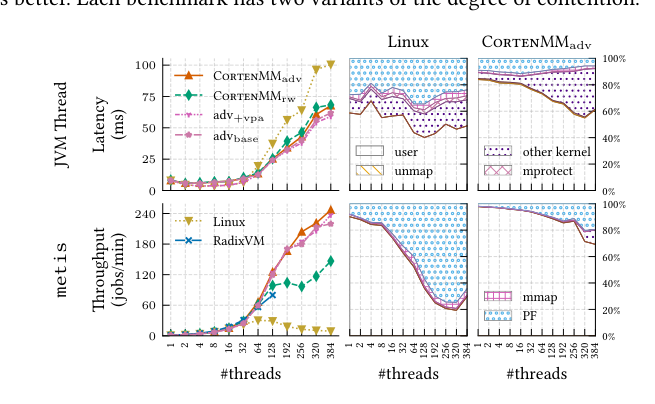
What it shows. JVM thread-creation latency (lower is better) and metis map-reduce throughput (higher is better) across thread counts, with kernel/user time breakdowns. At 384 cores, CortenMMadv and CortenMMrw cut JVM thread-creation latency by 32% versus Linux, mirroring the Android app-startup bottleneck the paper cites from kernel mailing-list reports. On metis (1.6 GB input, 8 MB allocator chunks never returned to the kernel, matching RadixVM's own setup), CortenMMadv beats Linux by 26x and CortenMMrw by 15x at 384 cores; CortenMMadv also beats RadixVM by 1.24x at 128 cores, where RadixVM crashes.
What to take from it. Both workloads are dominated by page faults on many cores touching disjoint stacks or heap chunks, exactly the pattern where removing VMA-level contention pays off most. The breakdowns show the fraction of time Linux spends in the kernel growing sharply with thread count, the signature of the VMA bottleneck.
dedup and psearchy: CortenMM helps most without a workaround allocator
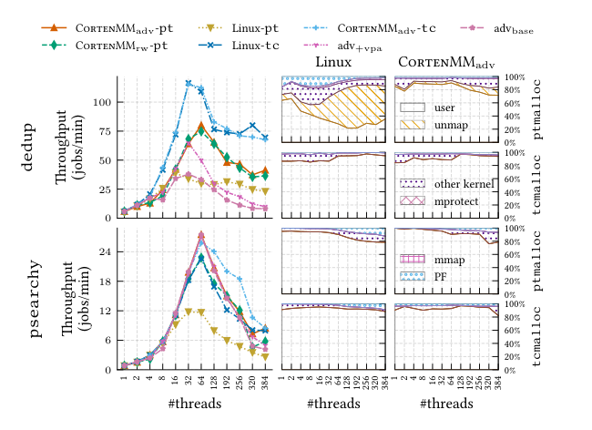
What it shows. Throughput of dedup and psearchy under the default allocator (ptmalloc) and under tcmalloc, which rarely returns memory to the OS. With ptmalloc, Linux stops scaling past 16 threads on dedup (mmap_lock contention from frequent unmap); CortenMMadv reaches 2.69x Linux's throughput at 64 threads, after which the application's own unscalable userspace locking dominates. On psearchy with ptmalloc, both CortenMMrw and CortenMMadv beat Linux by about 2x at 64 threads. With tcmalloc, Linux improves and narrows the gap, but still trails CortenMM, at a memory cost (about 2x for psearchy, measured separately in the paper's memory-usage comparison).
What to take from it. Modern allocators like tcmalloc partly paper over Linux's memory management bottleneck by avoiding the costly operations (frequent unmap) rather than fixing them, at the price of extra memory footprint; CortenMM removes the bottleneck directly, benefiting both allocators but mattering most with the default one.
Removing the VMA tree does not add memory overhead
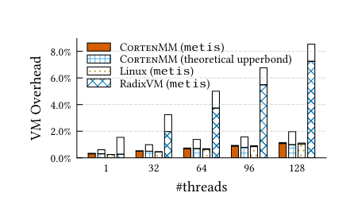
What it shows. Memory overhead (page tables plus other metadata) on metis for CortenMM, Linux, and RadixVM, plus a theoretical worst case for CortenMM where every PT page's per-PTE metadata array is fully populated.
What to take from it. CortenMM and Linux have similar overhead in practice; even CortenMM's theoretical upper bound, double its typical overhead, stays within 2%. RadixVM's per-core page table replication (the mechanism behind its strong high-contention PF numbers in Result 2) costs noticeably more memory, illustrating the tradeoff CortenMM avoids by keeping one shared page table.
Portability to RISC-V preserves CortenMM's performance and costs less code than Linux
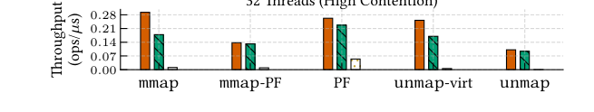
What it shows. Single-threaded and 32-thread (low- and high-contention) throughput of the five microbenchmarks in a RISC-V VM, compared between CortenMM and Linux; the paper reports the gap matches the x86-64 results in Result 1. Separately, Table 5 in the paper reports lines of code needed to port from x86 or add a feature: 252 LoC for RISC-V versus Linux's 699, 82 versus 273 for Intel MPK, and 368 versus 471 for Intel TDX.
What to take from it. CortenMM's performance advantage is not an x86-specific artifact, and the smaller porting diffs support the paper's claim that eliminating the VMA layer, not just the page-table abstraction, is what saves porting effort, since Linux has to adapt both layers.
FAQ
Q·What exactly is being removed, if not the page table itself?▾
The page table stays; CortenMM removes the separate software-level data structure (Linux's VMA tree) that today sits above it to record virtual memory regions and bookkeeping. CortenMM attaches that bookkeeping directly to the page table instead, via a per-PTE metadata array on each page-table page.
Q·How is this different from Linux's existing per-VMA locks, or from RadixVM and NrOS?▾
Per-VMA locks, RadixVM, and NrOS all keep the two-level design and try to make it scale better with finer locking or new data structures. CortenMM instead removes one of the two levels entirely, so there is nothing to synchronize against the page table in the first place. The paper argues this is why it both scales better and is simpler to verify.
Q·Doesn't removing the VMA abstraction hurt portability?▾
The paper's argument is the opposite: portability was the VMA abstraction's original justification back when MMUs varied widely (segments, hashed, inverted page tables). Since x86, ARM, and RISC-V now share the same radix-tree page table shape, CortenMM hides their remaining minor differences with Rust traits, and the paper reports this costs less code than Linux's equivalent porting (Table 5, Evaluation tab).
Q·What is the difference between CortenMMrw and CortenMMadv, and which should you use?▾
CortenMMrw locks page-table pages with ordinary readers-writer locks while traversing root to leaf; it is simple and already outperforms Linux. CortenMMadv instead traverses lock-free under RCU and only locks the covering page table page and its descendants once found, scaling further under low contention. The tradeoff: CortenMMrw is easier to reason about and verify, while CortenMMadv is faster, especially at high core counts, at the cost of a more involved protocol (handling concurrent unmap races, Section 7 of the How It Works tab).
Q·How does RCU avoid use-after-free when a page table page is unmapped mid-traversal?▾
Unmapping a page table page first atomically clears its entry in the parent, so any concurrent reader sees either the stale-but-valid old page or a cleared entry, never corrupted memory. The freed page is placed in a global RCU monitor and only actually freed once no thread can still be reading it. A thread that does reach the removed page sees it marked "stale" and retries from the root instead of acting on lost state.
Q·What does the formal verification actually prove, and what does it not prove?▾
It proves mutual exclusion for both locking protocols (no two threads access overlapping page-table state concurrently) and functional correctness of the four basic operations (query, map, mark, unmap), including that the page table always stays well-formed. It does not verify the rest of the OS, does not use a machine memory model (the page table is modeled as a simple array), and the verified code is ported to Verus and checked separately rather than compiled together with the rest of the kernel.
Q·Why does using safe Rust matter here, beyond memory safety?▾
Safe Rust (enforced with #![deny(unsafe_code)] outside the verified core) prevents data races in the unverified parts of the kernel, catching the straightforward bugs (like forgetting a lock) that remain there. It also cannot contain inline assembly, so it structurally cannot bypass the transactional interface to touch the MMU directly, which is what lets the verification guarantees actually hold for the whole system.
Q·What memory management features does CortenMM support, and what's missing?▾
CortenMM supports on-demand paging, copy-on-write, page swapping, reverse mapping, memory-mapped files, and huge pages, matching Linux on this list (Table 2, How It Works tab). It currently lacks NUMA memory placement policy, which the authors say they plan to add by storing NUMA state in the same per-PTE metadata array used for everything else.
Q·Why is CortenMM actually slower than Linux on plain mmap?▾
CortenMM allocates and initializes page table pages at mmap time, which is more expensive than creating one VMA struct. Linux defers that page-table work to the first page fault instead. The paper notes this is why CortenMM wins on mmap-PF (mmap plus an access that faults): across the two operations together, Linux still has to do the same page-table work eventually.
Q·Does CortenMM run on a real, general-purpose OS, or is it a research prototype only?▾
CortenMM is part of Asterinas, a from-scratch, Linux-ABI-compatible OS under active development by a team of about thirty people. At the time of writing it implements 219 of 336 commonly used Linux system calls and can run substantial applications including JVM and MySQL, and its evaluation uses an Ubuntu 22.04 userspace on top of it.
Q·What happens to operations that need to enumerate the whole address space, like fork?▾
This is where losing the VMA tree can hurt: Linux can read off all regions directly from the tree, while CortenMM must walk the page table. LMbench results show CortenMM is 17.7% slower than Linux at plain fork, but 23.0% faster at fork+exec (because CortenMM handles the subsequent page faults faster) and about the same on a full shell spawn.
Q·Could this idea be retrofitted into Linux?▾
The authors believe the principle applies to Linux too, but only if Linux were willing to drop support for ISAs that don't use multi-level radix-tree page tables, and they note this would require substantial engineering effort beyond the scope of the paper.